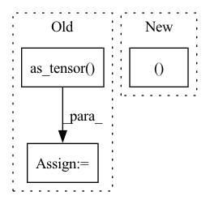

Pattern ID :37196
Before Change
adj_matrix = (U * V) @ U.T
adj_matrix[adj_matrix < 0] = 0.
adj_matrix = torch.as_tensor( adj_matrix, dtype=torch.float)
V = torch.as_tensor(V, dtype=torch.float)
U = torch.as_tensor(U, dtype=torch.float)
data.V, data.U = V.to(device), U.to(device)After Change
edge_index, edge_weight = from_scipy_sparse_matrix(sp.csr_matrix(adj_matrix))
data.V, data.U = V.to(device), U.to(device)
data.edge_index, data.edge_weight = edge_index.to(device), edge_weight.to(device)
return data
def __repr__(self) -> str:In pattern: SUPERPATTERN
Frequency: 6
Non-data size: 3
Instances Fragment ID: 107205331
Project Name: edisonleeeee/greatx
Commit Name: fa8487482e49bcdca312cb4f52139cf146ff7c67
Time: 2022-05-31
Author: cnljt@outlook.com
File Name: graphwar/defense/purification.py
M Class Name: Eigendecomposition
N Class Name: Eigendecomposition
M Method Name: __call__(3)
N Method Name: __call__(3)
M Parent Class: BaseTransform
N Parent Class: BaseTransform
M File Name: graphwar/defense/purification.py
N File Name: graphwar/defense/purification.py
M Start Line: 117
M End Line: 137
N Start Line: 117
N End Line: 136
Before Change
loss_list.append(loss)
norm_list.append(norm)
loss_list = torch.as_tensor(loss_list)
norm_list = torch.as_tensor( norm_list)
return loss_list, norm_list
def remask(self, label: int) -> (torch.Tensor, torch.Tensor):
generator = Generator(self.noise_dim, self.dataset.num_classes, self.data_shape)After Change
loss_list.append(loss)
mark_list.append(mark)
loss_list = torch.as_tensor(loss_list)
return loss_list, mark_list
def remask(self, label: int) -> (torch.Tensor, torch.Tensor):
generator = Generator(self.noise_dim, self.dataset.num_classes, self.data_shape)
for param in generator.parameters(): Fragment ID: 107205330
Project Name: ain-soph/trojanzoo
Commit Name: 6c5c8e1497a35b04b94df96e36657854ae08bc06
Time: 2020-09-18
Author: ain-soph@live.com
File Name: trojanzoo/defense/backdoor/deep_inspect.py
M Class Name: Deep_Inspect
N Class Name: Deep_Inspect
M Method Name: get_potential_triggers(1)
N Method Name: get_potential_triggers(1)
M Parent Class: Defense_Backdoor
N Parent Class: Defense_Backdoor
M File Name: trojanzoo/defense/backdoor/deep_inspect.py
N File Name: trojanzoo/defense/backdoor/deep_inspect.py
M Start Line: 70
M End Line: 72
N Start Line: 72
N End Line: 73
Before Change
super().__init__()
self.actor = _create_fcnn(state_size, hidden_size, output_size=action_size, activation_function=activation_function, final_gain=0.01, dropout=dropout)
log_std = log_std_init * np.ones(action_size, dtype=np.float32)
self.log_std = torch.nn.Parameter(torch.as_tensor( log_std) )
def forward(self, state, greedy=False):
std = torch.exp(self.log_std)
After Change
def __init__(self, state_size, action_size, hidden_size, activation_function="tanh", log_std_dev_init=-0.5, dropout=0):
super().__init__()
self.actor = _create_fcnn(state_size, hidden_size, output_size=action_size, activation_function=activation_function, dropout=dropout, final_gain=0.01)
self.log_std_dev = Parameter(torch.full((action_size Fragment ID: 107205335
Project Name: kaixhin/imitation-learning
Commit Name: 2f3af0a306b832a1e3186c6b3d0800b7bab64a10
Time: 2021-05-01
Author: design@kaixhin.com
File Name: models.py
M Class Name: Actor
N Class Name: Actor
M Method Name: __init__(7)
N Method Name: __init__(7)
M Parent Class: nn.Module
N Parent Class: nn.Module
M File Name: models.py
N File Name: models.py
M Start Line: 50
M End Line: 54
N Start Line: 53
N End Line: 56
Before Change
for data_point in range(self.num_data_points):
datum, label = self.dataloader.dataset[pointer]
data += [datum]
labels += [torch.as_tensor( label) ]
pointer += server_payload["data"].classes
pointer = pointer % len(self.dataloader.dataset)
data = torch.stack(data).to(**self.setup)After Change
def compute_local_updates(self, server_payload):
Compute local updates to the given model based on server payload.
data, labels = self._generate_example_data()
// Compute local updates
shared_grads = []
shared_buffers = [] Fragment ID: 107205334
Project Name: jonasgeiping/breaching
Commit Name: 1ab2867fea20551797c9aea8ae67099093ec7180
Time: 2021-10-01
Author: jonas.geiping@googlemail.com
File Name: breaching/cases/users.py
M Class Name: UserSingleStep
N Class Name: UserSingleStep
M Method Name: compute_local_updates(2)
N Method Name: compute_local_updates(2)
M Parent Class: torch.nn.Module
N Parent Class: torch.nn.Module
M File Name: breaching/cases/users.py
N File Name: breaching/cases/users.py
M Start Line: 64
M End Line: 74
N Start Line: 64
N End Line: 64
Before Change
for data_point in range(self.num_data_points):
datum, label = self.dataloader.dataset[pointer]
data += [datum]
labels += [torch.as_tensor( label) ]
pointer += server_payload["data"].classes
pointer = pointer % len(self.dataloader.dataset)
data = torch.stack(data).to(**self.setup)After Change
def compute_local_updates(self, server_payload):
Compute local updates to the given model based on server payload.
user_data, user_labels = self._generate_example_data()
// Compute local updates
shared_grads = [] Fragment ID: 107205336
Project Name: jonasgeiping/breaching
Commit Name: 1ab2867fea20551797c9aea8ae67099093ec7180
Time: 2021-10-01
Author: jonas.geiping@googlemail.com
File Name: breaching/cases/users.py
M Class Name: UserMultiStep
N Class Name: UserMultiStep
M Method Name: compute_local_updates(2)
N Method Name: compute_local_updates(2)
M Parent Class: UserSingleStep
N Parent Class: UserSingleStep
M File Name: breaching/cases/users.py
N File Name: breaching/cases/users.py
M Start Line: 151
M End Line: 187
N Start Line: 158
N End Line: 200